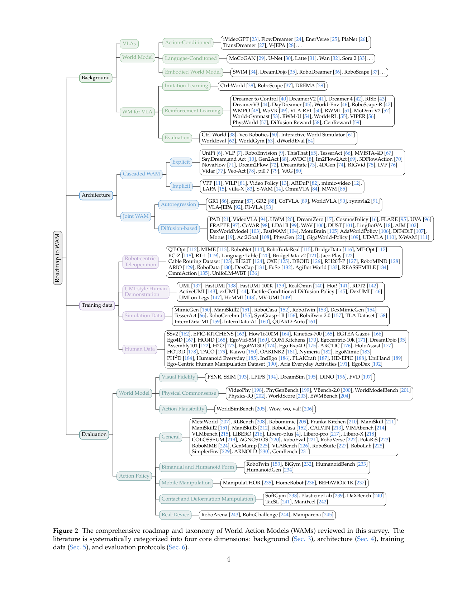
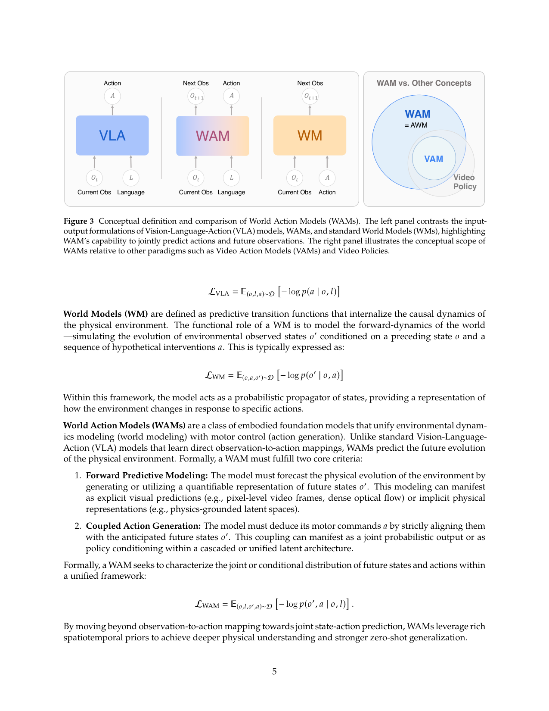
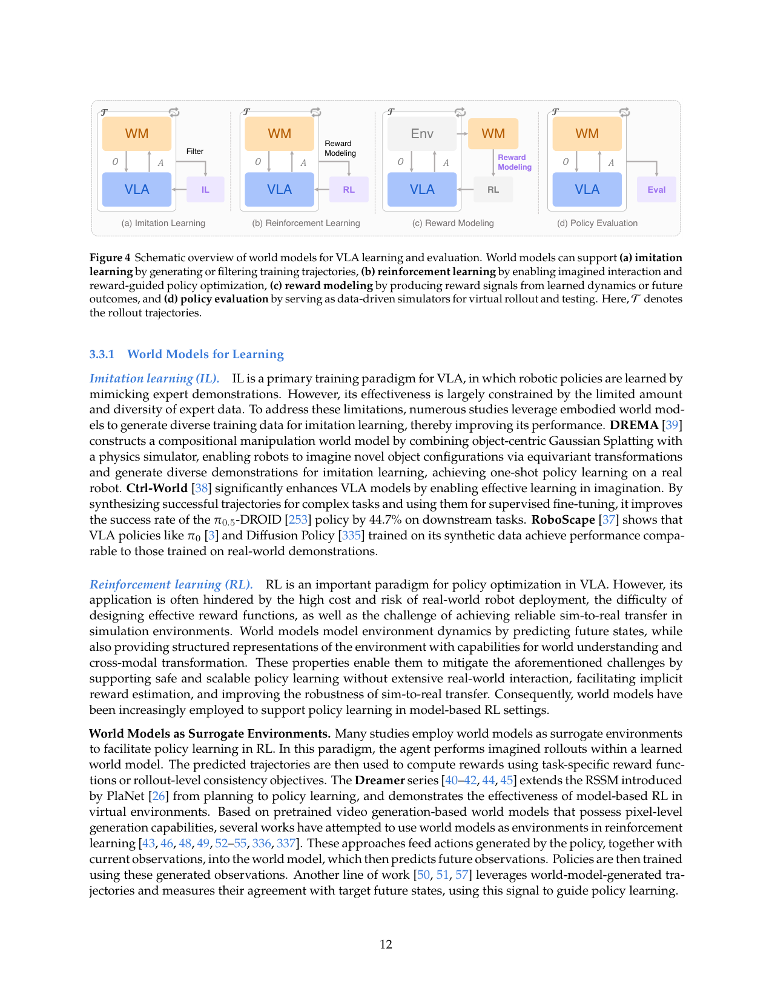
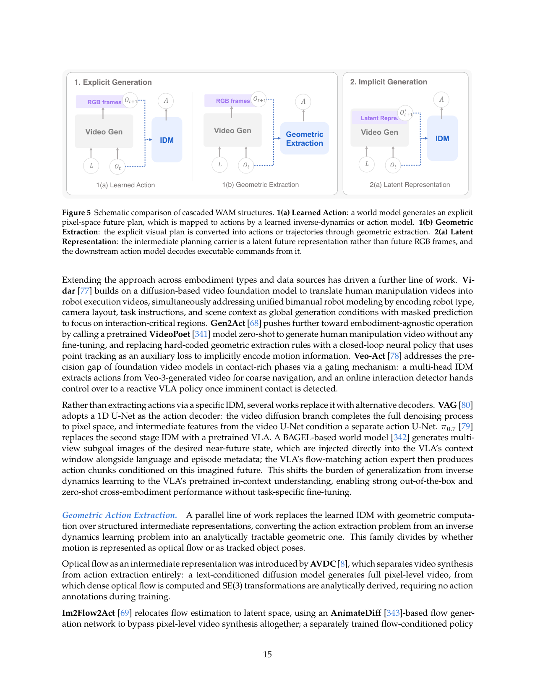
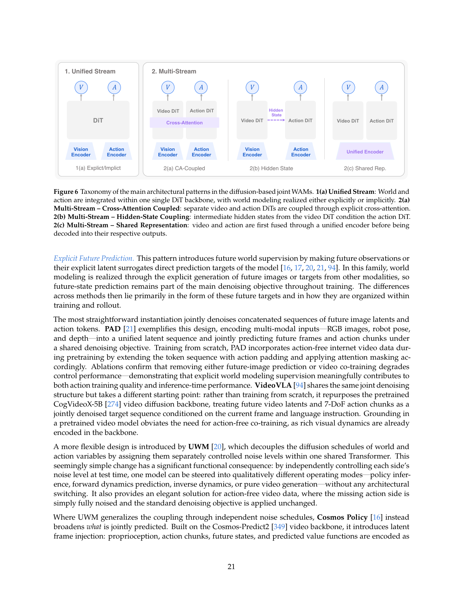
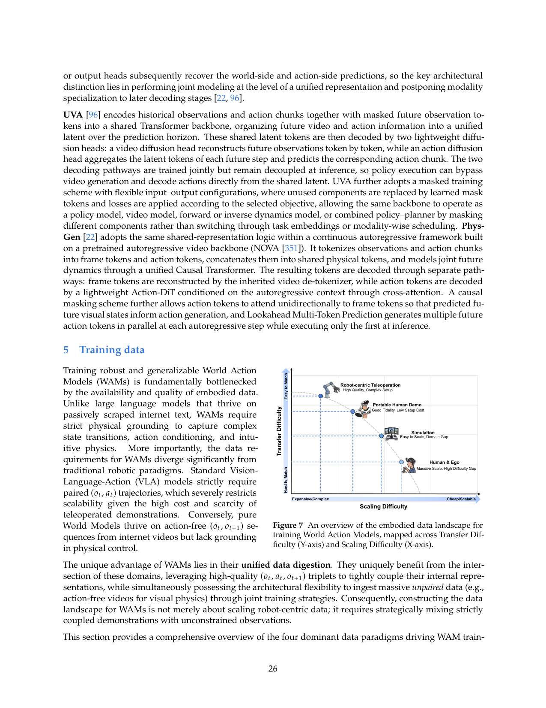

第一份系统梳理 World Action Model(WAM)的综述:把'统一预测未来状态和动作'这族方法正式定义,拆成 Cascaded vs Joint 两大架构范式,沿生成模态/条件机制/动作解码三维细分,并覆盖数据生态、评测协议、开放挑战——给 WAM 这个快速膨胀的领域一张可导航的地图。
问题
要解决什么：本综述整理的是:VLA 只学 observation→action 映射、不显式建模世界动态,泛化受限;而把 world model 集成进 policy 的方法近一年爆发式增长(DreamZero/LingBot-VA/Cosmos-Policy/Fast-WAM 等),但文献碎片化——架构、学习目标、应用场景各说各话,缺统一概念框架。作者要正式定义 WAM、厘清与 VLA/Video Policy/AWM/VAM 的边界,给出结构化分类法,梳理数据生态和评测协议,并指出开放挑战,给进入这个领域的人一张可导航的地图。
为什么 prior work 不够：之前没有系统综述把 WAM 作为独立范式梳理。各 WAM 论文用不同术语(Video Policy/AWM/VAM 混用)、不同分类轴,新进入者难以判断:显式视觉预测是否必需?Cascaded 和 Joint 架构在下游控制上到底差在哪?各种耦合机制提供什么归纳偏置?数据混合的最优配比是什么?评测上 PSNR/FVD 只测视觉不测物理,task success 只测动作不测视觉-动作因果一致性——这套脱节让 WAM 的真实能力被误判。综述要把这些混乱和空白显式化。
输入 / 输出
输入
| 名称 | 类型 | 说明 |
|---|---|---|
| observation o | 多模态 | 视觉(RGB/depth/点云/光流)+ proprio + 触觉/力(WM 综述强调多模态是开放前沿) |
| language instruction l | text | 任务指令;Cascaded 式常用作视频生成条件,Joint 式常 cross-attention 注入 |
输出
| 名称 | 类型 | 说明 |
|---|---|---|
| future state o' | 显式或隐式 | 显式:像素视频/latent/光流/点云;隐式:physics-grounded latent(JEPA 式) |
| action a | 连续或离散 | action chunk;Cascaded 由 IDM 几何/学习提取,Joint 联合去噪/自回归生成 |
控制频率：综述不训练模型,无单一频率;指出 DreamZero 7Hz vs 非 generative VLA 50Hz 的 latency gap 是开放挑战
输入拼接 protocol
本综述定义的 WAM 统一目标函数(概念层 protocol):
L_WAM = E_{(o,l,o',a)~D} [ -log p(o', a | o, l) ]
这是 WAM 的概念契约——区别于 VLA 的 L_VLA = E[-log p(a|o,l)](只预测动作)和 WM 的 L_WM = E[-log p(o'|o,a)](只预测状态)。WAM 必须同时满足:①Forward Predictive Modeling(生成或利用可量化的未来状态 o' 表示);②Coupled Action Generation(动作 a 严格对齐到预测的未来状态 o')。
两种因子分解(架构层 protocol):
【Cascaded WAM】p(o',a|o,l) = p(a|o',o,l) · p(o'|o,l) —— 先合成未来状态表示,再从中派生动作;两阶段分离训练。
【Joint WAM】直接建模 p(o',a|o,l) —— 状态预测和动作生成在统一模型里联合优化。
Joint 内部两种生成路线:Autoregressive:未来状态和动作序列化成 token,左到右因果解码。分三种表示:Explicit Decoupled(异构格式分头输出,如 GR-1/GR-2)/ Unified Discrete(全量化进共享词表,如 CoT-VLA/WorldVLA/ℱ1)/ Predictive Latent(放弃显式 token,在连续 latent 自回归,如 VLA-JEPA)。
Diffusion-based:多步去噪并行生成状态和动作。分 Unified Stream(单 DiT 联合去噪,如 DreamZero/Cosmos/UWM/PAD)和 Multi-Stream(多分支耦合:Cross-Attention 如 CoVAR/LDA-1B/DUST,Hidden-State,Shared Representation;LingBot-VA/DexWorldModel 等 MoT)。
三个易混坑:①language 在 Cascaded 里常作视频生成条件,在 Joint 里常 cross-attention 注入,不是统一序列拼接;②多视角处理随架构变——有的通道拼接(Ctrl-World token 维拼接),有的独立编码;③训练用未来状态作监督,推理时是否生成未来状态因方法而异(Fast-WAM/GigaWorld 推理跳过视频生成,LingBot-VA/Cosmos 必须生成)。
数据集
| 数据 | 规模 | 备注 |
|---|---|---|
| Robot-centric Teleoperation | 数十数据集 | QT-Opt/MIME/RoboNet/BridgeData/OXE/DROID/AgiBot World/RoboMIND/ARIO 等;机器人遥操作,精度高但成本高、规模受限 |
| UMI-style Human Demonstration | 便携式 | UMI/FastUMI/DexUMI/UMI on Legs/HoMMI 等;便携手持设备采集,跨本体潜力大,拉近人类与机器人数据 |
| Simulation Data | 可大规模生成 | MimicGen/ManiSkill2/RoboCasa/RoboTwin 2.0/DexMimicGen 等;自动生成、域随机化,但 sim-to-real gap |
| Internet-scale Egocentric Video | 百万小时级 | EPIC-KITCHENS/HowTo100M/Ego4D/Ego-Exo4D/Assembly101/Nymeria/Humanoid Everyday 等;规模最大、无动作标注,WAM 能利用(video-only objective) |
架构（摘要）
主干与结构
backbone：N/A(综述不提模型);综述覆盖的 WAM 用视频扩散 backbone(Wan2.1/Wan2.2/CogVideoX/Cosmos-Predict2/LTX-Video/Sora 2 等)或 autoregressive VLM(PaliGemma/Qwen3-VL/VILA-U/Chameleon 等)
参数：覆盖模型跨度大:从 GR-1 的 195M 到 DreamZero 的 14B;主流 2-7B
类型：systematic survey: Cascaded vs Joint WAM taxonomy, with data/eval/challenges
关键组件
- WAM 正式定义:统一 p(o',a|o,l),满足 Forward Predictive Modeling + Coupled Action Generation 两准则
- 概念厘清:WAM vs VLA(只 p(a|o,l))vs WM(只 p(o'|o,a))vs VAM(video 对齐动作)vs Video Policy(用视频 backbone 但不强制预测承诺)vs AWM(早期术语,WAM 重定位为 Agent 而非 simulator)
- Cascaded WAM 分类:Explicit Planning(像素空间,Learned Action Extraction 或 Geometric Extraction)/ Implicit Planning(latent 表示)
- Joint WAM 分类:Autoregressive(Explicit Decoupled / Unified Discrete / Predictive Latent)/ Diffusion-based(Unified Stream: Explicit/Implicit Future Prediction;Multi-Stream: Cross-Attention / Hidden-State / Shared Representation)
- 数据生态四源:Robot Teleop / UMI Human Demo / Simulation / Internet Egocentric Video
- 评测三维:Visual Fidelity(PSNR/SSIM/LPIPS/FVD)/ Physical Commonsense(VideoPhy/PhyGenBench/WorldScore)/ Action Plausibility(WorldSimBench);指出缺联合评测指标
- 七大开放挑战:架构耦合缺乏对照实验 / 多模态物理状态表示 / 数据混合设计 / 推理延迟 / 评测方法论 / 长程层次 / 安全验证
为什么这样设计
综述的组织逻辑是:先用概率定义把 WAM 和相邻概念划清边界(Section 2),再追溯 VLA+WM 两条历史脉络如何汇成 WAM(Section 3),然后用 Cascaded vs Joint 这个顶层二分法把所有方法挂进统一框架(Section 4),沿生成模态(autoregressive/diffusion)/条件机制(explicit/implicit)/动作解码(learned IDM/geometric/联合)三维细分。这样组织让读者能从任意一篇新 WAM 论文快速定位它在设计空间的位置,并判断它的架构选择带来什么 trade-off。Cascaded 的核心 trade-off 是模块解耦带来训练简单但两阶段误差累积;Joint 的核心 trade-off 是联合优化对齐紧但训练复杂、推理重。这个二分法是综述最有价值的贡献。
数值 sense
| 项 | 值 |
|---|---|
| papers_reviewed | 100+ 篇 WAM 方法 + 数十背景/数据/评测论文;Figure 1 时间线列 ~60 代表作 |
| architecture_taxonomy_depth | 2 层主分类(Cascaded/Joint)+ 2-3 层细分:Cascaded→Explicit/Implicit→Learned/Geometric/Latent;Joint→Autoregressive/Diffusion→(AR: Explicit Decoupled/Unified Discrete/Predictive Latent)(Diffusion: Unified Stream Explicit/Implicit + Multi-Stream Cross-Attn/Hidden-State/Shared-Repr) |
| backbone_span | 视频扩散:Wan2.1-14B(DreamZero)/Wan2.2-5B(LingBot-VA/Fast-WAM)/CogVideoX-5B(VideoVLA)/Cosmos-Predict2-2B(Cosmos-Policy)/LTX-Video-2B(GE-Act)/Sora 2;自回归 VLM:PaliGemma-3B(π0)/Qwen3-VL-2B(VLA-JEPA)/VILA-U-7B(CoT-VLA)/Chameleon(WorldVLA) |
| params_span | GR-1 195M(最小)~ DreamZero 14B(最大);主流 2-7B(Cosmos-Policy 2B / LingBot-VA 5.3B / Fast-WAM 6B / π0 3B) |
| data_sources | 4 大类:Robot Teleop(数十数据集,OXE/DROID/AgiBot World)/ UMI Human Demo(便携)/ Simulation(MimicGen/RoboTwin 2.0)/ Internet Ego Video(EPIC-KITCHENS/Ego4D/HowTo100M,百万小时级) |
| eval_dimensions | 3 维:Visual Fidelity(PSNR/SSIM/LPIPS/FVD/DreamSim/DINO)+ Physical Commonsense(VideoPhy/PhyGenBench/VBench-2.0/WorldScore/Physics-IQ)+ Action Plausibility(WorldSimBench/WoW) |
| action_policy_benchmarks | General(MetaWorld/RLBench/CALVIN/LIBERO)+ Bimanual/Humanoid(RoboTwin/BiGym/HumanoidBench)+ Mobile(ManipulaTHOR)+ Contact/Deformation(SoftGym/TacSL)+ Real-Device(RoboArena/Maniparena) |
| latency_reference | DreamZero 7Hz(算法+系统优化极限)vs 非 generative VLA 50Hz;综述指出这是核心开放挑战——WAM 推理 latency tax 威胁闭环控制 |
| open_challenges | 7 个:架构耦合缺对照实验 / 多模态物理状态(触觉/力/声)/ 数据混合设计原理 / 推理延迟 / 评测方法论(缺联合指标)/ 长程层次与时间上下文 / 安全验证(prediction-integrated safety) |
→ 详见 Architecture tab。
关键结果
Insights
- WAM 的定义性特征是'预测承诺'——必须显式或隐式地预测未来状态 o' 作为推理输出的一部分。Video Policy 只继承视频 backbone 表示但不强制预测,不算 WAM(p5 Figure 3)。这个区分把'装上视频 backbone 就叫 WAM'的滥用挡住了。
- Cascaded vs Joint 二分法是整个综述最有价值的贡献:它把所有 WAM 方法挂进统一框架,让读者能从任意新论文快速定位设计空间位置,并判断架构选择的 trade-off(p14, Figure 5/6)。这个二分比按 backbone(AR/Diffusion)分更根本,因为它直接对应'世界和动作怎么耦合'。
- WAM 能用 video-only 数据是相对 VLA 的根本数据优势——Internet Ego Video 百万小时级无动作标注,VLA 必须有 action 才能学。这打开了 scaling 路径,可能比单个模型架构创新更重要(p26 Figure 7)。
- 推理 latency 是 WAM 的阿喀琉斯之踵:DreamZero 7Hz 是极限,非 generative VLA 50Hz。综述提出'task-adaptive predictive fidelity'——不追求高保真加速,而是识别任务所需的最小充分世界模型(p43)。这是比单纯堆 CUDA 优化更深刻的加速方向。
- 评测方法论的脱节是 WAM 真实能力被误判的根源:PSNR/FVD 测视觉但允许物理错误,task success 测动作但忽略视觉-动作因果。综述提出联合指标(Counterfactual Consistency / Foresight-Conditioned Success)——这是评测范式需要补的核心空白(p43)。
- 架构耦合缺对照实验是领域最大方法论空白:各种结构策略并存但无匹配条件下的系统比较,导致'架构时尚'驱动而非 principled design。综述把这点列为第一开放挑战——这本身是对当前 WAM 研究节奏的一个批评(p41)。
vs 同类工作
- vs 各 WAM 单篇论文(DreamZero/LingBot-VA/Cosmos-Policy/Fast-WAM):那些论文各自提架构,但用不同术语和分类轴;本综述用统一 Cascaded/Joint 框架把它们全挂进设计空间,让横向比较成为可能。
- vs 现有 VLA 综述:VLA 综述聚焦 observation→action 映射,本综述把 WAM 作为独立范式(预测未来状态+动作)梳理,补了'world modeling 集成进 policy'这个空白的系统综述。
- vs 现有 world model 综述:WM 综述多聚焦'world model 作 simulator/reward'的外生工具角色;本综述聚焦'WM 集成进 policy 成 WAM'的内生范式,这是近一年爆发的新方向。
- vs wam-vs-vla 鲁棒性研究:那份研究在评测协议层面对比 WAM/VLA;本综述在架构/概念层面梳理 WAM 内部分类。两者互补——一个测谁更强,一个理清怎么分类。
局限
- 论文自承:架构耦合缺乏对照实验,本综述只能罗列各范式,无法给出'Cascaded vs Joint 在匹配条件下谁更优'的实证结论(p41 Open Challenge 1)。
- 论文自承:评测方法论脱节,本综述整理了现有评测但未提出新的联合评测指标,只指出方向(Counterfactual Consistency 等)(p43)。
- 论文自承:多模态物理状态(触觉/力/声)是未开发前沿,本综述覆盖的 WAM 几乎全预测 RGB,多模态部分只能指向未来(p42)。
- 论文自承:数据混合设计原理不清,本综述罗列四类数据但无法给出最优配比(p42)。
- 我们读出:综述覆盖方法截至 2026 年初,但 WAM 领域迭代极快(每月新论文),部分最新方法可能未纳入;Figure 1 时间线已显示 2026 年仍在爆发,综述的时效性有限。
- 我们读出:分类法本身是人为构造,Cascaded vs Joint 的边界在 hybrid 方法上模糊(如 π0.7 用 VLA 替 IDM 属 Cascaded 还是 Joint?MOTUS 用视频 backbone 但 action 走 VLM expert 算不算 WAM?)——综述承认 MOTUS 被排除因'action 不走 world backbone',但这类边界判断有主观空间。
- 我们读出:综述是叙述性梳理,缺定量 meta-analysis(如各架构在统一 benchmark 上的成功率分布),读者难以从综述直接判断哪种架构实证上更优——这需要像 wam-vs-vla 那样的对照研究配合。
可复现性
- homepage：https://openmoss.github.io/Awesome-WAM
- github：https://github.com/OpenMOSS/Awesome-WAM
- nature：综述论文,无代码/权重;提供 Awesome-WAM 论文清单仓库供追踪
WAM Survey 架构详解
> 配套 card.json。本综述不提模型,而是梳理 WAM 的设计空间。下面用 Mermaid 把核心 taxonomy 画清,再用文字讲透每个分支。所有数字来自论文(页码/表号标注)。
1. WAM 的概念契约(Section 2)
flowchart LR
subgraph VLA["VLA"]
V_in["o, l"] --> V_out["a<br/>p(a|o,l)"]
end
subgraph WM["World Model"]
W_in["o, a"] --> W_out["o'<br/>p(o'|o,a)"]
end
subgraph WAM["WAM (本综述定义)"]
W_in2["o, l"] --> W_out2["a + o'<br/>p(o',a|o,l)"]
endWAM 的两准则(p5):
1. Forward Predictive Modeling:必须生成或利用可量化的未来状态 o' 表示(显式像素视频/latent/光流/点云,或隐式 physics-grounded latent)。
2. Coupled Action Generation:动作 a 必须严格对齐到预测的未来状态 o'(联合概率输出,或 cascaded/joint 架构内的 policy conditioning)。
形式化:L_WAM = E[-log p(o', a | o, l)]。区别于 VLA 的 L_VLA = E[-log p(a|o,l)] 和 WM 的 L_WM = E[-log p(o'|o,a)]。
概念边界厘清(p6):
- WAM vs VAM(Video Action Model):WAM 是 modality-agnostic 超集(不只视频,含点云/触觉/力);VAM 限于视频对齐动作。
p(a|o) 即可);WAM 要求预测 o' 是推理输出的显式组件。2. 顶层二分:Cascaded vs Joint WAM(Section 4)
flowchart TB
WAM["WAM<br/>p(o',a|o,l)"]
WAM --> CAS["Cascaded WAM<br/>p(o',a|o,l)=p(a|o',o,l)·p(o'|o,l)<br/>先合成未来状态,再派生动作<br/>两阶段分离训练"]
WAM --> JOI["Joint WAM<br/>直接建模 p(o',a|o,l)<br/>状态预测和动作生成联合优化<br/>单模型"]
CAS --> EX["Explicit Planning<br/>(像素空间)"]
CAS --> IM["Implicit Planning<br/>(latent 表示)"]
EX --> EXL["Learned Action Extraction<br/>(学 IDM: UniPi/VLP/RoboEnvision)"]
EX --> EXG["Geometric Extraction<br/>(光流→SE(3): AVDC/Im2Flow2Act)"]
IM --> IML["Latent Representation<br/>(VPP/LAPA/mimic-video/S-VAM)"]
JOI --> AR["Autoregressive"]
JOI --> DF["Diffusion-based"]
AR --> AR1["Explicit Decoupled<br/>(GR-1/GR-2 双头)"]
AR --> AR2["Unified Discrete<br/>(CoT-VLA/WorldVLA/ℱ1)"]
AR --> AR3["Predictive Latent<br/>(VLA-JEPA)"]
DF --> DF1["Unified Stream<br/>(单 DiT: DreamZero/Cosmos/PAD/UWM)"]
DF --> DF2["Multi-Stream"]
DF1 --> DF1a["Explicit Future Prediction<br/>(DreamZero/Cosmos/VideoVLA)"]
DF1 --> DF1b["Implicit Future Prediction<br/>(FLARE/FRAPPE latent 对齐)"]
DF2 --> DF2a["Cross-Attention Coupled<br/>(CoVAR/LDA-1B/DUST)"]
DF2 --> DF2b["Hidden-State Coupled"]
DF2 --> DF2c["Shared Representation"]核心 trade-off:
- Cascaded:模块解耦训练简单,世界模型不需管机器人运动学,动作模型不需管长程场景预测;但两阶段误差累积、未来状态表示和动作对齐弱。
3. Cascaded WAM 详解(Section 4.1)
三种子模式(p15 Figure 5):
1(a) Learned Action Extraction
视频生成模型出像素未来,学习 IDM 提取动作。UniPi 奠基(文本条件 U-Net 扩散 + CNN+MLP IDM);VLP 加 VLM 子动作生成 + tree-search value 评分控误差;RoboEnvision 用非自回归关键帧 + 插值;ThisThat 用 deictic 表达("this/that"+手势)消歧;Say Dream Act 用对抗蒸馏减步数 + 帧率无关预测;Veo-Act 用 gating——粗导航用 IDM,接触时切 VLA。
1(b) Geometric Extraction
视频未来转光流/轨迹,几何解析出 SE(3) 动作,无需动作标注。AVDC 先生成像素视频再算密集光流→SE(3);Im2Flow2Act 把流估计搬到 latent 空间,绕过像素生成;TesserAct 加深度/法向通道;MVISTA-4D 用轨迹级 latent 优化 + 残差 IDM。
2(a) Latent Representation(Implicit)
中间载体是 latent 未来表示,不生成像素。VPP/VILP/Video Policy/ARDuP/mimic-video/LAPA/S-VAM/OmniVTA/MWM 等。动作模型从 latent 解码。比 Explicit 高效,但 latent 表示质量决定动作精度。
4. Joint WAM - Autoregressive 详解(Section 4.2.1)
三种表示范式(p19 Table 2):
Explicit Decoupled Representation
异构格式分头输出。GR-1(195M,GPT-style)双分支出未来 patches + 连续动作;GR-MG 加 [PROG] token 宏/微步层次;GR-2(30-719M)转 VQGAN 离散视觉 + CVAE 动作 chunking。跨模态 grounding 浅但灵活。
Unified Discrete Representations
全量化进共享 LLM 词表,同一 next-token head。CoT-VLA(7B,VILA-U)混合注意力:先因果注意力生成视觉 CoT,再全注意力预测动作;WorldVLA(7B,Chameleon)modality-specific causal masking,禁止同 chunk 动作 token 互相 attend;RynnVLA-002(5B)加连续 Action Transformer 头;ℱ1(4.2B)MoT,Generation expert 出 VQ token,Action expert 从视觉 foresight 推动作(foresight-guided IDM)。统一但离散控制高方差、compounding error。
Predictive Latent Representations
放弃显式 token,连续 latent 自回归。VLA-JEPA(2B,Qwen3-VL)在 latent 空间联合建模,未来帧只作监督目标,结构无泄漏;通过 embodied action token 条件化 flow-matching head 出动作。高效抽象但放弃像素可解释性。
5. Joint WAM - Diffusion-based 详解(Section 4.2.2)
Unified Stream(单 DiT 联合去噪)
世界和动作在同主干。再分:
- Explicit Future Prediction:未来观测作直接预测目标。PAD(从头训 + action-free 视频共训);VideoVLA(用 CogVideoX-5B 预训练 backbone);UWM(独立 noise schedule 控世界/动作,一模型切多模式);Cosmos-Policy(Cosmos-Predict2 + latent frame injection,一 checkpoint 同时是 policy/WM/value function);DreamZero(Wan2.1-14B + 轻量 state/action encoder,闭环 KV-cache 替换);GigaWorld-Policy(动作只 attend 历史观测,推理跳过视频生成);X-WAM(加深度分支,RGB-D 联合);UD-VLA(离散 diffusion)。
Multi-Stream(多分支耦合)
- Cross-Attention Coupling:视频/动作双 DiT,cross-attention 耦合。CoVAR(Bridge Attention);LDA-1B(共享 MM-DiT 注意力 + DINO latent,任务可切换);DUST(独立 noise timestep 解耦去噪轨迹)。
6. 数据生态四源(Section 5, Figure 7)
flowchart TB
subgraph Plane["迁移难度(Y) vs 规模化难度(X)"]
RT["Robot Teleop<br/>迁:易 规:难<br/>OXE/DROID/AgiBot World"]
UMI["UMI Human Demo<br/>迁:中 规:中<br/>UMI/DexUMI/UMI on Legs"]
SIM["Simulation<br/>迁:难 规:易<br/>MimicGen/RoboTwin 2.0"]
EGO["Internet Ego Video<br/>迁:难 规:最易<br/>EPIC-KITCHENS/Ego4D/HowTo100M"]
end关键洞察:WAM 能利用 video-only 数据(video prediction objective 不需 action),打开 Internet Ego Video 这条最大规模(百万小时级)数据通路——这是 WAM 相对 VLA 的数据生态优势。VLA 必须有 action 标注。
7. 评测三维(Section 6)
| 维度 | 测什么 | 指标/benchmark | 问题 |
|---|---|---|---|
| Visual Fidelity | 视觉质量 | PSNR/SSIM/LPIPS/FVD/DreamSim/DINO | 忽略物理正确性(悬浮物体得分高) |
| Physical Commonsense | 物理常识 | VideoPhy/PhyGenBench/VBench-2.0/WorldScore/Physics-IQ | 与动作脱节 |
| Action Plausibility | 动作合理性 | WorldSimBench/WoW | 只测动作,忽略视觉-动作因果 |
综述指出的核心空白:三维度脱节,缺联合评测指标。提出方向:Counterfactual Consistency(动作如何适应想象未来的扰动)、Foresight-Conditioned Success(执行轨迹是否严格遵循视觉计划而非靠 spurious correlation)。
8. 七大开放挑战(Section 7)
1. 架构耦合缺对照实验:各种结构策略并存但无匹配条件下系统比较,领域被"架构时尚"驱动。需 rigorous ablation 和理论分析。
2. 多模态物理状态表示:WAM 几乎全预测 RGB,但接触密集操作的关键信息(触觉/力/声/材料 compliance)在像素不可见。需 modality-adaptive prediction。
3. 数据混合设计原理:非机器人数据(尤其人类视频)的作用不清——是语义增强还是动态学习?需 embodiment-aware filtering。
4. 推理延迟:DreamZero 7Hz vs 非 generative VLA 50Hz。需 task-adaptive predictive fidelity(识别任务所需最小充分世界模型,而非一味高保真加速)。
5. 评测方法论:缺联合指标(视觉-动作因果一致性)。
6. 长程层次与时间上下文:当前 WAM 多 System 1,需多分辨率预测(粗粒度规划 + 细粒度反应)和扩展时间记忆。
7. 安全验证:WAM 的预测能力也让失败模式更危险。需 prediction-integrated safety(不确定性估计作 safety monitor 的一类输入)。
9. 数值 sense:综述覆盖多大
| 项 | 值 | 出处 |
|---|---|---|
| 综述方法数 | 100+ 篇 WAM + 数十背景/数据/评测;Figure 1 时间线列 ~60 代表作 | 全文 |
| 分类深度 | 2 层主分类 + 2-3 层细分:Cascaded→Explicit/Implicit→Learned/Geometric/Latent;Joint→AR/Diffusion→(AR: Decoupled/Discrete/Latent)(Diffusion: Unified Explicit/Implicit + Multi-Stream Cross-Attn/Hidden/Shared) | Section 4 |
| backbone 跨度 | 视频扩散:Wan2.1-14B(DreamZero)/Wan2.2-5B(LingBot-VA/Fast-WAM)/CogVideoX-5B(VideoVLA)/Cosmos-Predict2-2B(Cosmos-Policy)/LTX-Video-2B(GE-Act)/Sora 2;AR VLM:PaliGemma-3B(π0)/Qwen3-VL-2B(VLA-JEPA)/VILA-U-7B(CoT-VLA)/Chameleon(WorldVLA) | Table 1/2, 各方法 |
| 参数跨度 | GR-1 195M(最小)~ DreamZero 14B(最大);主流 2-7B | Table 1/2 |
| 数据源 | 4 大类:Robot Teleop(OXE/DROID/AgiBot World)/ UMI Human / Simulation(MimicGen/RoboTwin 2.0)/ Internet Ego Video(EPIC-KITCHENS/Ego4D/HowTo100M) | Section 5, Figure 7 |
| 评测维度 | 3:Visual Fidelity(PSNR/SSIM/LPIPS/FVD)+ Physical Commonsense(VideoPhy/WorldScore)+ Action Plausibility(WorldSimBench) | Section 6 |
| action policy benchmarks | General(MetaWorld/RLBench/CALVIN/LIBERO)+ Bimanual/Humanoid(RoboTwin/BiGym/HumanoidBench)+ Mobile + Contact/Deformation(SoftGym/TacSL)+ Real-Device(RoboArena/Maniparena) | Section 6.2 |
| latency 参考 | DreamZero 7Hz(算法+系统优化极限)vs 非 generative VLA 50Hz | Section 7 |
| 开放挑战 | 7 个:架构对照 / 多模态物理状态 / 数据混合 / 推理延迟 / 评测方法论 / 长程层次 / 安全 | Section 7 |
WAM 时间演化与架构 taxonomy(最重要)

原文 caption：Temporal evolution and taxonomy of representative works on World Action Models (WAMs). The left branch illustrates the progression of Joint WAM architectures, which tightly couple world prediction and action generation, showing a divergence into Autoregressive and Diffusion-based representation schemes, with the continuous approach further bifurcating into Unified Stream and Multi-Stream backbones. The right branch summarizes the development of Cascaded WAM pipelines, where world modeling and action execution are primarily decoupled, evolving along Explicit and Implicit representation alignment trajectories.
全文最该看的图。左分支 Joint WAM 时间线:从 GR-1(2024)开始,2025-2026 爆发,分 Autoregressive(GR-2/CoTVLA/WorldVLA/VLA-JEPA/ℱ1)和 Diffusion-based(VideoVLA/Cosmos-Policy/DreamZero/LingBot-VA/Fast-WAM/GigaWorld-Policy),后者再分 Unified Stream 和 Multi-Stream。右分支 Cascaded WAM 时间线:UniPi(2023)起,沿 Explicit(UniPi/VLP/AVDC/Gen2Act/Veo-Act)和 Implicit(VPP/LAPA/mimic-video/S-VAM)发展。这张图是整个综述的导航地图——一眼看清 WAM 全景和两种架构范式的演化路径。
WAM 路线图(四大维度)

原文 caption：The comprehensive roadmap and taxonomy of World Action Models (WAMs) reviewed in this survey. The literature is systematically categorized into four core dimensions: background (Sec. 3), architecture (Sec. 4), training data (Sec. 5), and evaluation protocols (Sec. 6).
综述的四大维度路线图:Background(VLA/WM 脉络)/ Architecture(Cascaded Explicit+Implicit / Joint Autoregressive+Diffusion-based)/ Training Data(Robot-centric Teleop / UMI Human / Simulation / Human Data)/ Evaluation(World Model: Visual Fidelity+Physical Commonsense+Action Plausibility / Action Policy: General+Bimanual+Mobile+Contact+Real-Device)。每个分支下列具体方法/数据集/benchmark。是综述结构的可视化,告诉你'想找 X 该去哪节'。
WAM 概念定义与对比

原文 caption：Conceptual definition and comparison of World Action Models (WAMs). The left panel contrasts the input-output formulations of Vision-Language-Action (VLA) models, WAMs, and standard World Models (WMs), highlighting WAM's capability to jointly predict actions and future observations. The right panel illustrates the conceptual scope of WAMs relative to other paradigms such as Video Action Models (VAMs) and Video Policies.
两张子图。左:VLA(输入 o,l → 输出 a)/ WM(输入 o,a → 输出 o')/ WAM(输入 o,l → 输出 a + o')的输入输出对比,WAM 同时出动作和未来观测。右:WAM 与 VAM/Video Policy/AWM 的概念包含关系——WAM 是 modality-agnostic 超集(不只视频,含点云/触觉/力),Video Policy 限于视频 backbone 且不强制预测承诺。这张图把 WAM 的概念边界钉死,是 Section 2 定义的可视化。
World Model 如何辅助 VLA

原文 caption：Schematic overview of world models for VLA learning and evaluation. World models can support (a) imitation learning by generating or filtering training trajectories, (b) reinforcement learning by enabling imagined interaction and reward-guided policy optimization, (c) reward modeling by producing reward signals from learned dynamics or future outcomes, and (d) policy evaluation.
WM 作为 VLA 的外生工具(非集成进 policy)的四种用法:①imitation learning(生成/过滤训练轨迹);②reinforcement learning(想象交互 + reward-guided 优化);③reward modeling(从动态/未来产 reward);④policy evaluation(作 benchmark)。这四条是 WAM 出现前的 WM-in-robotics 主流,和 Section 4 的'WM 集成进 policy 成 WAM'形成对照——把 WM 从离线监督变成内部预测核心是 WAM 范式的关键转变。
Cascaded WAM 结构示意图

原文 caption：Schematic comparison of cascaded WAM structures. 1(a) Learned Action: a world model generates an explicit pixel-space future plan, mapped to actions by a learned IDM. 1(b) Geometric Extraction: explicit visual plan converted to actions via geometric extraction. 2(a) Latent Representation: intermediate planning carrier is a latent future representation, action model decodes from it.
Cascaded WAM 的三种子模式:1(a) Learned Action(UniPi/VLP/RoboEnvision——视频生成出像素未来,学习 IDM 提取动作);1(b) Geometric Extraction(AVDC/Im2Flow2Act——视频未来转光流,几何解析出 SE(3) 动作,无需动作标注);2(a) Latent Representation(VPP/LAPA/mimic-video——中间载体是 latent 未来表示,不生成像素,动作模型从 latent 解码)。这张图是 Cascaded 二分法(Explicit Pixel vs Implicit Latent)+ Explicit 二分(Learned vs Geometric)的可视化,对应 Section 4.1。
Joint WAM (Diffusion) 结构 taxonomy

原文 caption：Taxonomy of the main architectural patterns in the diffusion-based joint WAMs. 1(a) Unified Stream: World and action integrated within one single DiT backbone. 2(a) Multi-Stream – Cross-Attention Coupled: separate video and action DiTs coupled through explicit cross-attention. 2(b) Multi-Stream – Hidden-State Coupling. 2(c) Multi-Stream – Shared Representation.
Diffusion-based Joint WAM 的四种子模式:1(a) Unified Stream(单 DiT 联合去诺,如 DreamZero/Cosmos-Policy/PAD/UWM——最紧耦合);2(a) Multi-Stream Cross-Attention(视频/动作双 DiT,cross-attention 耦合,如 CoVAR/LDA-1B/DUST);2(b) Hidden-State Coupling(视频 DiT 的隐藏状态条件化动作 DiT);2(c) Shared Representation(统一编码器先融合再分头解码)。这张图把 Joint WAM 最复杂的部分(Diffusion 路线的结构耦合)讲清,对应 Section 4.2.2。Unified vs Multi-Stream 是核心二分:前者紧但重,后者灵活但耦合机制要设计。
数据生态景观图

原文 caption：An overview of the embodied data landscape for training World Action Models, mapped across Transfer Difficulty (Y-axis) and Scaling Difficulty (X-axis).
训练 WAM 的四类数据在'迁移难度(Y)'vs'规模化难度(X)'二维平面的分布。Robot Teleop 迁移易但规模化难(成本高);UMI Human Demo 迁移中等、规模化中等;Simulation 迁移难(sim-to-real gap)但规模化易(自动生成);Internet Ego Video 迁移难但规模化最易(百万小时级,无动作标注)。这张图直观说明为什么 WAM 能利用 video-only 数据是个关键优势——它打开了 Internet Ego Video 这条最大规模的数据通路,是 WAM 相对 VLA 的数据生态优势。对应 Section 5。
🎧 音频版
时长 19:31 · Edge TTS
World Action Models: The Next Frontier in Embodied AI
2026-05-12，Fudan University 的 Siyin Wang 等人发布的论文，标题是 World Action Models: The Next Frontier in Embodied AI。
开场：这份综述要给你什么
这份综述是第一份把 World Action Model（WAM）作为一个独立范式系统梳理的工作——它正式定义 WAM、厘清它和相邻概念的边界、给出结构化分类法、梳理数据生态和评测协议、指出开放挑战。
为什么要做这件事？因为过去一年，WAM 这个方向爆发式增长。DreamZero、LingBot-VA、Cosmos-Policy、Fast-WAM、GigaWorld-Policy，每个月都有新论文。但文献碎片化严重——大家用不同术语，有人叫 Video Policy，有人叫 Action World Model，有人叫 World Action Model；分类轴也各说各话，有人按 backbone 分，有人按训练目标分。一个新进入这个领域的人，很难判断：显式视觉预测是不是必需的？Cascaded 和 Joint 架构在下游控制上到底差在哪？数据混合的最优配比是什么？评测上，PSNR、FVD 这些指标只测视觉不测物理，task success 只测动作不测视觉-动作的因果一致性——这套脱节让 WAM 的真实能力被误判。
这份综述要做的，就是把这些混乱和空白显式化，给一张能导航的地图。所以这篇口播稿我会讲得像一份导览：先讲 WAM 是什么、不是什么，再讲分类框架怎么用，最后讲边界和空白在哪。
WAM 是什么：一个概率定义
先把 WAM 的概念契约讲清楚。这份综述用概率定义把 WAM 和相邻概念划清边界。
VLA，也就是 Vision-Language-Action 模型，学的是 observation 到 action 的映射，目标是预测动作 a 给定观测 o 和语言 l，写成 p(a|o,l)。它只关心动作，不显式预测世界会怎么变。
World Model，学的是给定当前状态 o 和动作 a，预测下一个状态 o'，写成 p(o'|o,a)。它只关心世界演化，不直接出动作。
WAM，World Action Model，把这两者合起来。它统一建模 p(o', a|o, l)——给定当前观测和语言，同时预测未来状态和动作。这就是 WAM 的概念契约。
但要算 WAM，光有这个目标函数还不够。综述定了两条准则。第一，Forward Predictive Modeling，模型必须生成或利用一个可量化的未来状态 o' 的表示——可以是显式的像素视频、latent、光流、点云，也可以是隐式的 physics-grounded latent。第二，Coupled Action Generation，动作 a 必须严格对齐到预测的未来状态 o'，可以是联合概率输出，也可以是 cascaded 或 joint 架构里的 policy conditioning。
这里有个关键判断我特别想强调。WAM 的定义性特征是"预测承诺"。一个模型如果只是继承了视频生成模型的表示能力，但只把观测映射到动作 p(a|o)，没有显式预测未来状态作为推理输出的一部分，那它只是 Video Policy，不算 WAM。这个区分把"装上视频 backbone 就叫 WAM"的滥用挡住了。
还有个术语细节。早期文献用 AWM，Action World Model。综述刻意改用 WAM，原因是：AWM 里名词是 World Model，定位是 augmented simulator；WAM 里 World 和 Action 对等，定位是 Agent。这个术语转变反映了一个战略重定位——WAM 不是辅助工具，是机器人 foundation model 的新主类。
怎么用这张地图：Cascaded vs Joint 二分法
现在讲分类框架怎么用。这是整份综述最有价值的贡献。
所有 WAM 方法，综述用一个非常干净的顶层二分法挂进统一框架：Cascaded WAM 还是 Joint WAM。
Cascaded WAM 把目标函数因子分解：p(o',a|o,l) 等于 p(a|o',o,l) 乘以 p(o'|o,l)。意思是先合成未来状态 o' 的表示，再从这个未来状态派生动作 a。两个阶段是分离训练的——世界模型管世界演化，动作模型管动作解码，各管各的。
Joint WAM 不分解，直接建模 p(o',a|o,l)。状态预测和动作生成在同一个模型里联合优化，强制模型内部化世界动态和动作控制的因果依赖。
这个二分法为什么有价值？因为它直接对应"世界和动作怎么耦合"这个最根本的架构选择。Cascaded 的耦合是松的——世界模型和动作模型解耦，训练简单，世界模型不用管机器人运动学，动作模型不用管长程场景预测。但代价是两阶段误差累积，未来状态表示和动作对齐弱。Joint 的耦合是紧的——联合优化让对齐很紧，但训练复杂、推理重。
任何一篇新 WAM 论文，你只要看它"世界和动作是分两阶段还是一起训"，就能立刻定位它在设计空间的位置，并判断它的架构选择带来什么 trade-off。这比按 backbone 分（autoregressive 还是 diffusion）更根本，因为 backbone 只是实现细节，耦合方式才是架构本质。
Cascaded WAM 内部：显式像素还是隐式 latent
Cascaded 内部再分两层。Explicit Planning 用像素级未来作中间载体——视频、光流、点云。Implicit Planning 用 latent 未来表示，不生成像素。
Explicit 再分两种动作提取方式。第一种是 Learned Action Extraction，学一个 inverse dynamics model 从视频未来提取动作，像 UniPi、VLP、RoboEnvision。问题是 IDM 提取动作有 ill-posed 风险——同一个视觉未来可能对应多种合理动作。第二种是 Geometric Extraction，把视觉未来转成光流或轨迹，几何解析出 SE(3) 动作。这个特别有意思，因为 AVDC 和 Im2Flow2Act 这类方法不需要任何动作标注——它们从视频未来几何地算出动作，训练时只用视频。这打开了无动作标注数据的使用通路。
Implicit 用 latent 未来表示，像 VPP、LAPA、mimic-video。中间载体不是像素而是 latent 向量，动作模型从 latent 解码。比 Explicit 高效，因为不用生成像素，但 latent 表示的质量决定动作精度。
Joint WAM 内部：Autoregressive 还是 Diffusion
Joint WAM 内部分两条生成路线。
Autoregressive 路线把未来状态和动作序列化成 token，左到右因果解码。适合长 horizon 因果一致性，但序列解码慢、有 compounding error。内部再分三种表示范式。Explicit Decoupled 是异构格式分头输出，像 GR-1、GR-2 用双分支一个出视觉 patches 一个出连续动作，灵活但跨模态 grounding 浅。Unified Discrete 是全量化进共享 LLM 词表，同一个 next-token head 出所有模态，像 CoT-VLA、WorldVLA、ℱ1，统一但离散控制高方差。Predictive Latent 放弃显式 token，在连续 latent 空间自回归，像 VLA-JEPA，高效抽象但放弃像素可解释性。
Diffusion 路线用多步去噪并行生成状态和动作，能高频执行适合闭环控制，但计算密集。内部再分 Unified Stream 和 Multi-Stream。
Unified Stream 是单 DiT 联合去噪，世界和动作在同一个主干里。最紧耦合，同步最强。再分 Explicit Future Prediction（未来观测作直接预测目标，像 DreamZero、Cosmos-Policy、PAD、UWM）和 Implicit Future Prediction（未来信息通过辅助 future token 引入，latent 对齐，像 FLARE、FRAPPE）。DreamZero 就是 Unified Stream Explicit 的代表——Wan2.1-14B backbone 加轻量 state/action encoder，联合去噪 video latent 和 action latent，闭环用 KV-cache 替换消除误差累积。
Multi-Stream 是多分支耦合，世界和动作在不同的 DiT 里，通过某种机制耦合。再分 Cross-Attention Coupled（像 CoVAR、LDA-1B、DUST，双 DiT 用 cross-attention 交换信息）、Hidden-State Coupling（视频 DiT 的隐藏状态条件化动作 DiT）、Shared Representation（统一编码器先融合再分头解码）。LingBot-VA 和 Fast-WAM 属于 Mixture-of-Transformers 这种 Multi-Stream 变体。
Unified vs Multi-Stream 的核心 trade-off：Unified 紧耦合但单主干承载所有计算重；Multi-Stream 灵活可异构 schedule 但耦合机制要专门设计。工业部署如果重推理速度可能倾向 Multi-Stream（可对动作流用更轻 backbone），如果重精度可能倾向 Unified。
给你一个数值 sense：这个领域多大
光说"综述覆盖很多论文"没感觉，我把规模念细一点。
综述覆盖 100 多篇 WAM 方法，加上数十篇背景、数据、评测论文。Figure 1 的时间线列了大约 60 个代表作。从 2023 年的 UniPi 起步，2024 年 GR-1 开始上量，2025 到 2026 年爆发——每个月都有新论文。这本身说明 WAM 是个快速膨胀的领域，也意味着任何综述的时效性都有限。
backbone 跨度很大。视频扩散这边，从 LTX-Video-2B（GE-Act 用）到 Wan2.1-14B（DreamZero 用）都有，主流是 2 到 6B：Cosmos-Policy 2B、LingBot-VA 5.3B、Fast-WAM 6B。自回归 VLM 这边，PaliGemma-3B（π0 用）、Qwen3-VL-2B（VLA-JEPA 用）、VILA-U-7B（CoT-VLA 用）、Chameleon（WorldVLA 用）。参数跨度从 GR-1 的 195M 到 DreamZero 的 14B，主流是 2 到 7B。
数据生态分四类。Robot Teleop 是机器人遥操作数据，像 OXE、DROID、AgiBot World、RoboMIND，精度高但成本高、规模化难。UMI Human Demo 是便携手持设备采的人类示教，像 UMI、DexUMI、UMI on Legs，跨本体潜力大。Simulation 是仿真数据，像 MimicGen、RoboCasa、RoboTwin 2.0，自动生成、可域随机化，但有 sim-to-real gap。Internet Ego Video 是互联网第一人称视频，像 EPIC-KITCHENS、Ego4D、HowTo100M，百万小时级，但没有动作标注。
这里有个关键洞察。WAM 能利用 video-only 数据——它的 video prediction objective 不需要 action 标注就能学世界动态。这打开了 Internet Ego Video 这条最大规模的数据通路。VLA 必须有 action 标注才能学，用不了这些数据。所以 WAM 相对 VLA 有个根本的数据生态优势，scaling 潜力更大。这可能比单个模型架构创新更重要。
评测分三维度。Visual Fidelity 测视觉质量，指标有 PSNR、SSIM、LPIPS、FVD。Physical Commonsense 测物理常识，benchmark 有 VideoPhy、PhyGenBench、WorldScore、Physics-IQ。Action Plausibility 测动作合理性，有 WorldSimBench。action policy benchmarks 覆盖 General（MetaWorld、RLBench、CALVIN、LIBERO）、Bimanual/Humanoid（RoboTwin、BiGym、HumanoidBench）、Mobile、Contact/Deformation（SoftGym、TacSL）、Real-Device（RoboArena、Maniparena）。
记住这套数字，后面读 WAM 论文时可以拿它当坐标系：100+ 篇方法、Cascaded/Joint 二分、视频 backbone 2-14B、四类数据、三维评测。最该记住的是"video-only 数据是 WAM 相对 VLA 的根本数据优势"。
这张地图的边界：WAM 不是什么
讲完了 WAM 是什么、怎么分类，现在讲这张地图的边界——WAM 不是什么。这对避免过度外推很重要。
第一，WAM 不是"用视频 backbone 的 policy"。前面讲过，Video Policy 只继承视频 backbone 的表示能力但不强制预测承诺，不算 WAM。综述在 Table 1 里专门把 MOTUS 排除，原因是它的 action 走单独的 VLM expert 而不是 world model backbone——这违反了"动作必须从预测未来状态派生"这条准则。这种边界判断有主观空间，但综述至少把判断标准显式化了。
第二，WAM 不是万能鲁棒。从配套的 wam-vs-vla 鲁棒性研究看，WAM 在视觉扰动（噪声、光照、背景）上比 VLA 强，但在相机视角和机器人初始状态这种几何配置变化上和 VLA 一样弱。视频先验对"视觉外观变化"有效，对"几何配置变化"无效。所以"WAM 必然比 VLA 强"是过度外推。
第三，WAM 不是已经能工业部署。综述在开放挑战里专门点出推理 latency 是最大障碍——DreamZero 7Hz 是算法加系统优化的极限，仍远低于非 generative VLA 的 50Hz。WAM 的 latency tax 威胁闭环控制可行性。所以现在谈 WAM 替代 VLA 还早。
怎么用这份综述
这份综述该怎么用？我给你三个具体场景。
第一个场景：你读到一篇新 WAM 论文，想快速定位它。先看它世界和动作是分两阶段还是一起训——分两阶段是 Cascaded，一起训是 Joint。Cascaded 再看中间载体是像素还是 latent，Joint 再看是 autoregressive 还是 diffusion。三步就能定位它在设计空间的位置，然后判断它的架构选择带来什么 trade-off。
第二个场景：你在设计一个新 WAM，想判断该选哪种架构。先问你的优先级是什么。如果重推理速度、能容忍两阶段误差累积，倾向 Cascaded 或 Multi-Stream（可对动作流用轻 backbone）。如果重精度、要紧耦合，倾向 Joint Unified Stream。如果数据有限、想用 video-only 数据，选支持 video prediction objective 的设计。如果担心 compounding error，选带闭环 KV-cache 替换的（像 DreamZero）或 Predictive Latent（像 VLA-JEPA）。
第三个场景：你想判断 WAM 这个方向是否值得投入。看数据生态和开放挑战。数据上，WAM 能用 Internet Ego Video 这条百万小时级通路，scaling 潜力大于 VLA，这是根本优势。但开放挑战也明确：架构耦合缺对照实验（领域被"架构时尚"驱动）、推理 latency、评测方法论脱节、多模态物理状态未开发。这些是风险也是机会——投入 WAM 不是稳赢，但如果你能解决这些开放问题里的一个，就是有价值的贡献。
一个最值得记住的 insight
这份综述里有个判断，我建议你重点记：WAM 的定义性特征是预测承诺，不是视频 backbone。
这句话分量很重。它意味着判断一个模型是不是 WAM，不看它用什么 backbone，看它有没有显式或隐式地预测未来状态作为推理输出的一部分。一个用 VLM backbone 但加了未来状态预测目标的模型可以是 WAM；一个用视频 backbone 但只做 observation-to-action 映射的模型只是 Video Policy。
这个判断对实践很重要。它说明 WAM 是一个更广的范式，不是某个特定技术路线（视频 diffusion）的代名词——任何把"预测世界怎么变"和"决定动作"统一起来的模型都算。这意味着 WAM 的设计空间比"视频 backbone + action head"大得多，未来可能出现完全不用视频 backbone 的 WAM（比如纯 latent 的 VLA-JEPA 路线）。这给了领域一个更开放的发展方向，不被"必须用视频生成模型"这个技术选择锁死。
开放挑战：这张地图没覆盖什么
最后讲这份综述指出的七大开放挑战。这是地图的空白，也是未来工作的机会。
第一，架构耦合缺对照实验。各种结构策略（cascaded、joint diffusion、离散 token、隐式对齐）并存，但没有系统对照实验在匹配规模、数据、评测下比较它们。领域目前被"架构时尚"驱动而非 principled design。综述把这点列为第一开放挑战——这本身是对当前 WAM 研究节奏的一个批评。
第二，多模态物理状态表示。WAM 几乎全预测 RGB，但接触密集操作的关键物理信息——触觉分布、接触力、声学、材料 compliance——在像素空间不可见。未来需要 modality-adaptive prediction，有传感器时多模态预测，无时优雅降级到视觉。
第三，数据混合设计原理不清。非机器人数据（尤其人类视频）的作用到底是语义增强还是动态学习？最优配比是什么？综述提出要从经验超参调优转向信息论视角的数据混合设计。
第四，推理 latency。DreamZero 7Hz vs VLA 50Hz。综述提出 task-adaptive predictive fidelity——不追求高保真加速，而是识别任务所需的最小充分世界模型，按任务需求动态调预测精度。这是比单纯堆 CUDA 优化更深刻的加速方向。
第五，评测方法论脱节。视觉指标允许物理错误（悬浮物体得分高），动作指标忽略视觉-动作因果。综述提出联合指标：Counterfactual Consistency（动作如何适应想象未来的扰动）、Foresight-Conditioned Success（执行轨迹是否严格遵循视觉计划）。这是评测范式需要补的核心空白。
第六，长程层次与时间上下文。当前 WAM 多是 System 1，需要多分辨率预测——粗粒度状态转移动作战略规划，细粒度物理细节作反应控制。还要扩展时间记忆，不能只靠标准 attention 的二次开销。
第七，安全验证。WAM 的预测能力让失败模式更危险——它能想象未来，但想象的未来可能错。综述提出 prediction-integrated safety，把不确定性估计作为 safety monitor 的一类输入，在执行前验证动作。
这七个挑战是 WAM 走向成熟的路标。如果你要进入这个领域，挑一个挑战深入，比跟着架构时尚发论文更有价值。
一句话收束
这份综述给 World Action Model 这个快速膨胀的领域画了一张导航地图：用 Cascaded vs Joint 二分法把所有方法挂进统一框架，沿生成模态、条件机制、动作解码三维细分，梳理四类数据生态和三维评测协议，指出七大开放挑战。它最有价值的贡献是把"WAM 是什么、不是什么、怎么分类、边界在哪"讲清楚了，而不是提出某个新模型——这给进入这个领域的人一个坐标系，也给领域自身一个反思：架构耦合缺对照实验，我们还在被"架构时尚"驱动。